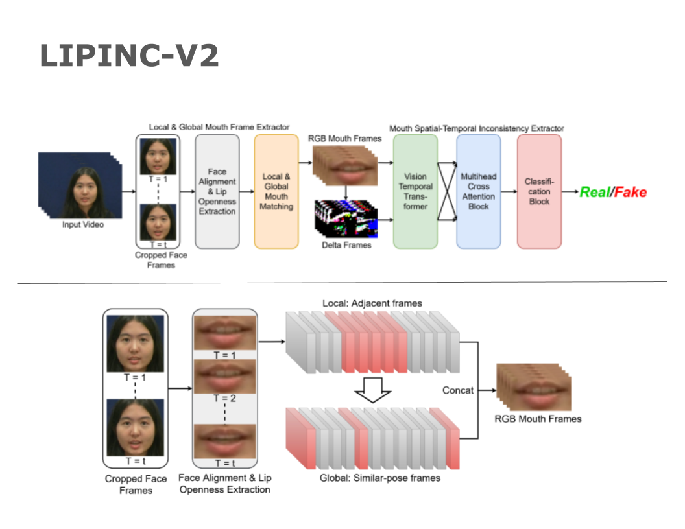
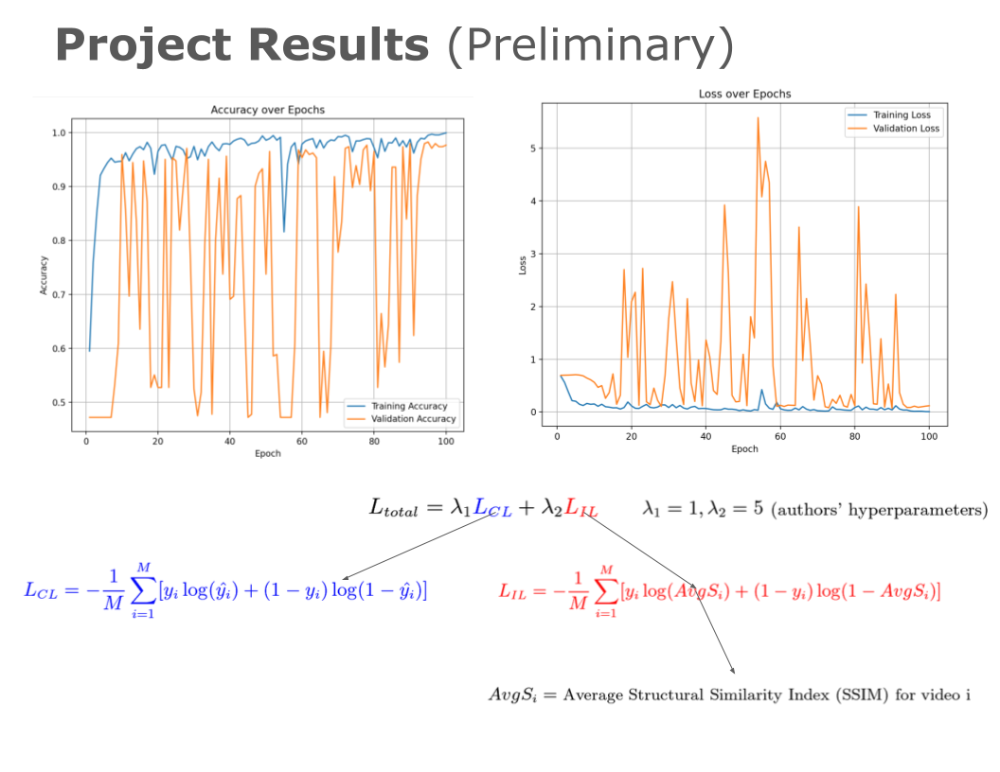
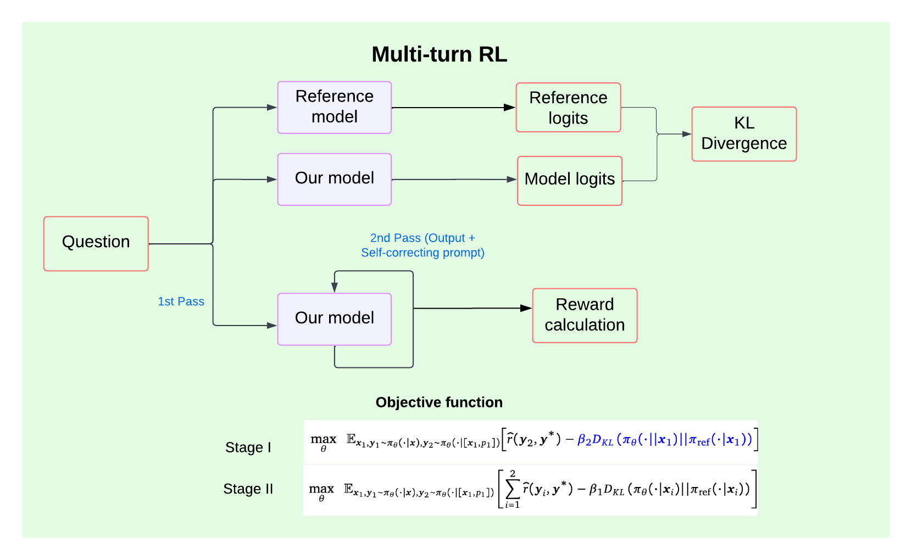
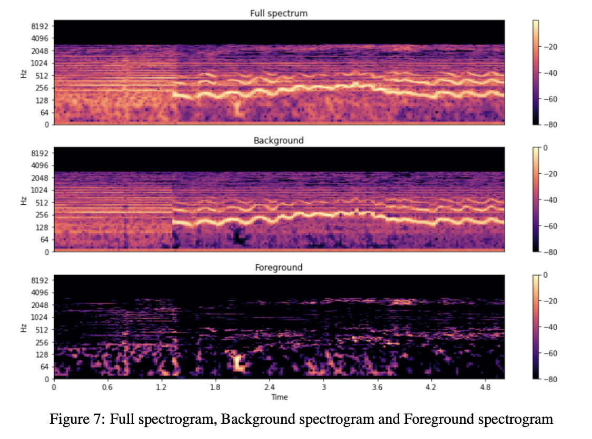
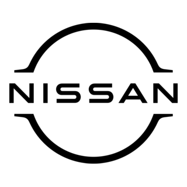
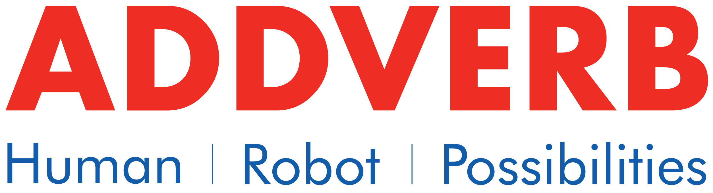

Ishita Gupta
I'm a second-year Master's student in Robotic Systems Development (MRSD) at Carnegie Mellon University, specializing in robotics and deep learning. Previously, I spent 2.5 years at Addverb as a Robotics Engineer, where I developed autonomous navigation systems, built physics-based simulators, and created multi-robot applications. I also interned at Google, automating cloud infrastructure pipelines for the Nest Devices team.
My research lies at the intersection of AI and robotics, with a focus on building physically intelligent systems: robots that can perceive, reason, and act in complex, dynamic environments. I'm particularly interested in humanoid robotics, embodied intelligence, and reinforcement learning, and in advancing how intelligent systems can move, adapt, and interact with the world in human-like ways.
{kind=link}
Projects & Research |
|
Autonomous Humanoid Loco-Manipulation for Tote Logistics
CMU MRSD Capstone Project, 2024 - Present Collaboration with Nissan & Field AI project page / code Developing an autonomous humanoid robot for warehouse tote manipulation using hybrid whole-body control, motion planning, and computer vision. |
|
.png)
 .png)
.png)
.png)
.png)
 |
Detecting Lip-Syncing Deepfakes: Vision Temporal Transformer for Analyzing Mouth Inconsistencies
CMU GenAI Course Project, 2024 project report Developed a Vision Temporal Transformer model to detect lip-syncing deepfakes by analyzing temporal inconsistencies in mouth movements. The model leverages attention mechanisms to capture both spatial and temporal relationships in video sequences, achieving improved accuracy in identifying synthetic media. |
|
 |
Training Language Models to Self-Correct via Reinforcement Learning
CMU Course Project, 2024 project report Led benchmarking of self-correction in LLMs, evaluating performance across Llama 3.2 1B, Llama 3.1 8B, and Mathstral 7B on MATH dataset. Achieved accuracy rates of up to 41.8%, identifying high Cor->Inc rates (46.9%) and low Inc->Cor improvement (3.78%). Engineered a multi-turn reinforcement learning framework (SCoRe) for fine-tuning. |
|
 |
Indian Classical Music Segmentation Using Machine Learning
LNMIIT B.Tech Project, 2021 - 2022 Advised by Prof. Dr. Sakthi Balan project page Developed an onset detection technique to isolate the Percussion Solo section in concert audio, applying clustering algorithms (K-means, DBSCAN) using audio processing libraries. |
Industry Experience |
|
 |
Nissan Advanced Technology Center - Silicon Valley
May 2025 - August 2025
Robotics Research Intern
Humanoid Robotics Team
|
|
 |
Addverb
January 2022 - July 2024
Robotics Engineer
Advanced Robotics & Industrial Automation
|
|
Google
May 2021 - August 2021
Software Engineering Intern
Nest Devices, Cloud Infrastructure
|
Education |
|
|
Carnegie Mellon University Master of Science in Robotic Systems Development (MRSD) CGPA: 3.83 | August 2024 - May 2026 Coursework: Deep Reinforcement Learning (10-703), Generative AI (10-623) Show more |
|
|
The LNM Institute of Information Technology (LNMIIT) Bachelor of Technology (B.Tech) in Computer Science and Engineering August 2018 - July 2022 Coursework: Artificial Intelligence, NLP, Advanced Algorithms Show more |
Teaching Experience |
|
Carnegie Mellon University Teaching Assistant - Introduction to Deep Learning (11-785) Spring 2025, Fall 2025 Course Website / YouTube Channel Responsibilities: • Lead recitation sections and office hours for 300+ students • Mentor teams on Deep Learning projects • Assist in course development and curriculum refinement • Create educational content and recorded lectures for online learning |
|
cloned from here! |